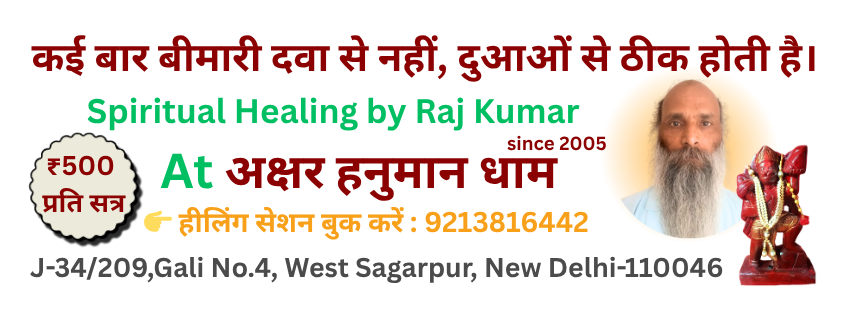

Spiritual Healing | आध्यात्मिक उपचार

Natural and Permanent Solution for Physical, Mental, and Emotional Problems – Without Any Side Effects.
शारीरिक, मानसिक और भावनात्मक समस्याओं का प्राकृतिक और स्थायी समाधान – बिना किसी दुष्प्रभाव के।
Contact Us Today for Spiritual Healing
Spiritual Healing: An Effective and Safe Alternative Treatment for All Diseases
Spiritual healing is an ancient yet still relevant healing method that restores balance to the body, mind, and soul. It provides a natural, side-effect-free solution for physical, mental, and emotional issues.
Although the effects appear gradually, it works deeply and provides lasting results. Through spiritual energy, the root cause of the disease is addressed and eliminated, preventing the recurrence of the disease.
If you are looking for a safe, effective, and holistic solution, spiritual healing may be the best option for you.
आध्यात्मिक उपचार: सभी रोगों के लिए एक प्रभावशाली और सुरक्षित वैकल्पिक चिकित्सा पद्धति
आध्यात्मिक उपचार एक प्राचीन, लेकिन आज भी प्रासंगिक चिकित्सा पद्धति है, जो शरीर, मन और आत्मा के संतुलन को बहाल करती है। यह शारीरिक, मानसिक और भावनात्मक रोगों के लिए एक प्राकृतिक और बिना दुष्प्रभाव वाला समाधान प्रदान करती है।
हालाँकि इसका असर धीरे-धीरे दिखाई देता है, लेकिन यह गहराई से कार्य करता है और स्थायी परिणाम प्रदान करता है। आध्यात्मिक ऊर्जा के माध्यम से रोग की जड़ पर काम करके इसे नष्ट किया जाता है, जिससे रोग का पुनः उभरना रोका जा सकता है।
यदि आप एक सुरक्षित, प्रभावशाली और समग्र उपचार की तलाश में हैं, तो आध्यात्मिक उपचार आपके लिए एक सर्वोत्तम विकल्प हो सकता है।
⚙️ Working Principle | कार्य सिद्धांत
Spiritual healing works based on the following principles:
- Energy Balance: Balancing the energy centers of the body to improve physical and mental health.
- Mantras & Meditation: Increasing spiritual peace and energy flow through ancient mantras and meditation techniques.
- Spiritual Purification: Purifying negative energy and emotional blockages to build positive energy.
- Energy Healing: Directly addressing the source (root) of the disease to eliminate it.
- Karmic Purification: Purifying negative karmas and energy to bring positivity and peace into life.
- Power of Mantras: Using the power of specific mantras to work on the subtle root of the disease.
- Power of Resolve: Making healing effective through resolution with the patient's consent and trust.
आध्यात्मिक उपचार का आधार निम्नलिखित सिद्धांतों पर काम करता है:
- ऊर्जा संतुलन: शरीर के ऊर्जा चक्रों को संतुलित करके शारीरिक और मानसिक स्वास्थ्य को सुधारना।
- मंत्र और ध्यान: प्राचीन मंत्रों और ध्यान विधियों के माध्यम से आत्मिक शांति और ऊर्जा का प्रवाह बढ़ाना।
- आध्यात्मिक शुद्धि: नकारात्मक ऊर्जा और भावनात्मक अवरोधों को दूर करके सकारात्मक ऊर्जा का निर्माण करना।
- ऊर्जा उपचार: रोग के स्रोत (जड़) पर सीधा असर डालकर उसे समाप्त करना।
- कार्मिक शुद्धि: नकारात्मक कर्मों और ऊर्जा को शुद्ध करके जीवन में सकारात्मकता और शांति लाना।
- मंत्र शक्ति: विशेष मंत्रों के जाप से रोग की सूक्ष्म जड़ पर कार्य करना।
- संकल्प बल: रोगी की सहमति और विश्वास के साथ संकल्प द्वारा उपचार को प्रभावी बनाना।
🔔 विशेष सुझाव / Special Tip
अच्छे परिणाम के लिए सिद्ध माला का उपयोग करें।
For better results, use a Siddha Mala energized with mantras and spiritual energy.
Siddha Mala
🔹 Key Benefits | प्रमुख लाभ
- ✅ Free from any side effects / किसी भी प्रकार के दुष्प्रभाव से मुक्त
- ✅ Long-term and lasting effects / दीर्घकालीन और स्थायी प्रभाव
- ✅ Mental peace and emotional balance / मानसिक शांति और भावनात्मक संतुलन
- ✅ Increased self-strength and immunity / आत्मबल और रोग प्रतिरोधक क्षमता में वृद्धि
- ✅ Positive changes in life / जीवन में सकारात्मक बदलाव
💰 Pricing and Plan | मूल्य और योजना
₹ 100 per day
👉 Experience the possibilities of spiritual healing in 51 days
👉 As per your request, each session includes up to 5 minutes of mantra and prayer chanting dedicated to you.
How to Order:
1.
Deposit the fee into the provided bank account.
2.
Email us the following details at
aksharhanumandham[at]gmail[dot]com or whatsapp
+919213816442 following details to confirm your order:
● Your
Name
● Your
Email Address
● Your
Phone Number
● Your
Full Address with Pin Code
●
Payment Details with a screenshot of the transaction.
Once we receive your payment confirmation, we will process your order and ship the
Siddha Mala to your address.
Note : This product delivery within
India only.
Bank Deposit :
SBI BANK DETAILS:
Account Name: RAJ KUMAR
Saving A/c No: 34047891546
Bank Name ; SBI BANK
Branch: C-BLOCK,JANAK PURI
IFSC Code SBIN0050258
For more information or to ask any questions, feel free to reach out: